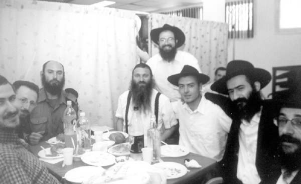

From the Cold of Siberia to Spreading the Warmth of Chassidus
R’ Ariel and his wife Rochel Elias made a long journey until they came to their shlichus among Russian speaking Jews in Givat Shmuel. Ariel himself was born to a non-Jewish mother and experienced anti-Semitism because he was considered Jewish. He was a member of street gangs but extricated himself, studied, went on to university, and eventually found his way to Eretz Yisroel. * Wherever he went he met Lubavitchers. It’s no surprise then that he himself became a Lubavitcher after converting. * A fascinating life story.

“All my life I’ve felt Jewish because my father is Jewish and in Russia I suffered for being ‘Jewish.’ I had just one problem; there was no way I was going to eat matza made with the blood of gentile children …”
That is what I heard from R’ Ariel Elias, shliach of the Rebbe to Russian speaking Jews in Givat Shmuel, which is near B’nei Brak. It goes to show to what extent anti-Semitic propaganda has penetrated the Soviet bloc.
R’ Elias’ life consists of sharp peaks and valleys. He was born to a family where the father is Jewish and the mother is not. He underwent a lot before discovering his G-d and joining the Jewish people.
Fifteen years after making aliya he has a beautiful Chassidishe family. He and his wife are the confidants of the Jewish-Russian community in Givat Shmuel. They focus on two areas: on seniors and on the many young people who live within and outside the city.
DIVINE PROVIDENCE
IN SIBERIA
R’ Elias was born in Novosibirsk. “When I tell people I was born in Siberia they ask whether we rode horses and whether we had electricity. The city I was born in is actually the scientific center of Russia, which attracted many Jews. About a million and a half people live there.”
In the neighborhoods in the center of the city lived those families where one spouse had a position in the communist party, while the rest of the population lived in the suburbs.
“The difference in status was enormous and in these neighborhoods a crime culture developed, which increased with the collapse of the communist regime. Most of my friends fell into crime. It began with organizing into street gangs, thievery, vandalism, and continued with joining one of the local mafias or descending into addiction to dangerous substances.”
In hindsight, R’ Elias sees the incredible divine providence which saved him time after time from falling into the clutches of crime.
“Hashem did not want me there and so I did not fall. We were friends; they were my pals with whom I grew up, but they knew that I would not join them in these activities.”
Although he wasn’t Jewish by the halachic definition, people considered him Jewish because his father is Jewish and he suffered accordingly.
“I remember walking down the street when I was a child and they shouted, ‘Stinking Jew.’ There were other lines they used which today I realize were anti-Semitic but back then I did not regard as such. Close friends and especially their parents would say to me, ‘The Jews are a thieving, lowly people but you are different.’”
He finished public school with the eighth grade like most of his friends. He then had two choices, to continue studying within a dormitory set-up that prepared people for simple professions or one that prepared people to be managers. Elias was the only one in his neighborhood who joined the program for managerial training.
“I spent a few years in that dormitory and got my diploma in robotics, while most of my friends had dropped out of the first option they had enrolled in and wandered the streets idly and deteriorated until they got involved with drugs and became criminals. Most of them are no longer alive.”
At a certain point in his life his maternal grandmother, an ardent Christian, tried to draw him toward Christianity. “It was after I graduated when I left my parents’ home to live with my grandmother. She would take me to church on Sunday and teach me to pray to statues before going to sleep. Whatever I heard from the priests and from her I tried to pass along to my friends.”
LIFE UPHEAVALS
“From a young age I was drawn to spirituality and I searched for the depth in everything; I hated superficiality. I always believed in the existence of a Creator and at a certain point I thought that Christianity was true. I became an ardent Christian and tried to get souls for the church. This period did not last long. When I grew older I realized that, at best, it consisted of half-truths.”
When he finished his studies, the security situation in the country began to go downhill:
“There were no jobs and many young people wandered about aimlessly, including myself. Crime began to escalate. It was scary to go from neighborhood to neighborhood even during the daytime. The police were not seen on the street and every day the number of murdered and injured grew from acts of theft and muggings. Following the murders of some of my friends, I decided to go to university.”
The big problem was the high average needed in order to be accepted and his marks, needless to say, were not especially high.
“By divine providence, that year they accepted whoever wanted to be accepted and I went back to school. I loved reading. I exchanged the boredom of the streets for sitting from morning till night in the university library. I especially liked reading philosophy books and literature in the areas of spirituality and sociology.”
When he finished his studies of philosophy and history, he wanted to attend a more advanced program for government from where you were able to get senior city and district government positions.
“I took three main tests in university, in general history, Russian history, and a historical term paper on a person of my choice. I sat for days and was tested and did well. But when I wanted to be accepted at the government school, they asked to see the tests. A special committee examined the tests and found that although the answers were correct and the term paper was well constructed, there were many typos and they rejected me.
“I decided not to argue and quietly headed toward the door. Then the administrator asked me to come back. She said that they were prepared for the uproar I would make when I would be told of rejection, but my quiet response made quite an impression on them. She decided to revoke their decision and to accept me.”
R’ Elias put a lot of work into his studies in the government school while continuing to read philosophy books and taking an interest in spirituality. “In 5751, communism fell and the economic situation deteriorated drastically. I had to leave school and help my father who ran a store that sold refrigerators and other electrical appliances.”
Ariel did his thesis at the university on the topic of the French Revolution and at the end he wrote that the world cannot exist without a government hierarchy and faith in a Creator of the world.
“My friends did not like me for coming to those conclusions, which only heightened for me the idea that if communism represented fanaticism, then their views were fanatical to the opposite side.”
At this point, Elias began to look into his origins and discovered that his paternal grandfather was a religious Jew while being an ardent communist. He lived in Poland. During World War II he fled with other Jews to Tashkent where he chose another last name that was similar to those of the local people. Since then, he was called Elias, a Sephardic name. “I asked my aunts and my father what his original name was but nobody knew.”
Crime throughout Russia became intolerable in the mid 90’s. People did not dare to leave the house unless they had to. People were beaten up for no reason and even lost their lives. This was the case not only in dangerous neighborhoods, for no corner of the city was safe.
In 5759, his younger brother lost his life. The news shook up the family. Ariel’s father had a severe heart attack from which he barely recovered while Ariel himself holed himself up at home and drowned his sorrows in liquor.
LIFE TRANSFORMATION
After a few weeks, Elias decided to stop his downward slide and look for a new life. His agnatic aunt had made aliya a while before and lived in Givat Shmuel. His decision was to leave Russia and join her.
“I thought I was Jewish and I would go to the land of the Jews. It was only when I got there that I found out that I am not Jewish because halacha says it goes after the mother.”
Ariel attended a special conversion ulpan in B’nei Brak where he learned Ivrit and about Torah and mitzvos. The woman who ran the ulpan was a Lubavitcher and every week she gave out the Sichat HaShavua in Russian.
“I loved to read the column with the Rebbe’s sicha. I was excited by the approach and the depth, philosophy on a high level. What I especially liked was that after a series of questions, the Rebbe resolved it all with one simple answer.”
R’ Elias also chose special education as his field, a field that he enjoyed while still in Russia. He studied it at the University of Tel Aviv.
“I won’t forget one of the stories I read in Sichat HaShavua during my conversion process that touched me deeply. The story is about a woman who went to the Rebbe for dollars and asked him how he did not tire from standing there so long. The Rebbe told her, every Jew is a diamond and when you count diamonds, you don’t get tired. This spoke to me and I realized that the Rebbe looks at Jews beyond all divisions.”
R’ Elias says he began learning Chassidus long before he became Jewish:
“I ran away from Russia to Eretz Yisroel in order to disconnect from a way of life that I so disapproved of. What gave me the answers and paved another way for me were the teachings of Chassidus; otherwise, I would have found myself drawn to the same life as I had there. I soon put on a kippa and bought tzitzis. I finally began to feel that I was slaking the fierce thirst that I always had for the truth.”
At a certain stage of the conversion process, he received his draft notice and was drafted into basic training where he met a Lubavitcher from Nahariya whom he connected with very much. His conversion concluded on 10 Elul and on Rosh HaShana he was in uniform on base.
“Before I was drafted I bought a good shaver and planned on using it, but the Lubavitcher from Nahariya explained to me the importance of a beard. By the end of the long conversation I had decided to leave my beard alone and that is true till today.”
On Yom Kippur he davened in the Chabad shul in Givat Shmuel run by the shliach R’ Shabtai Fisher. It was his first Yom Kippur as a Jew, something which moved him in a powerful way.
“I was moved in particular by the idea that the Rebbe had gathered me up to him. From the moment I started the conversion process I kept on meeting his emissaries – in the ulpan, in the army, and now I was going to a Chabad house which I liked from the very first moment and I became a regular visitor there.”
MATCH FROM HEAVEN
Rochel is from a Ukrainian immigrant family that settled in Nahariya and looked for a good school for their daughter. Although they were not religious, they sent her to the Migdal Ohr school in Migdal HaEmek. At that time there was a Lubavitcher principal who instilled a love and hiskashrus for the Rebbe in her students. By the time Rochel graduated she was a Lubavitcher. Her mother wanted her to study secular subjects and registered her at Bar Ilan University.
While at university she was introduced to the shluchim to Givat Shmuel and became a regular guest there. Another guest who joined them for Shabbos meals was Ariel Elias. Shortly thereafter the shlucha made the shidduch.
“On 19 Kislev we met for the first time and on 25 Adar, the Rebbetzin’s birthday, we married.” From day one it was clear to the young couple that they were going to devote their lives to shlichus.
REVOLUTION
IN GIVAT SHMUEL
R’ Elias works together with his wife Rochel, both with the young people as well as the seniors. Every holiday he arranges large scale programs, gatherings and farbrengens. If you asked him, the heart of his work is what happens at the Shabbos meals with mekuravim, in one-on-one shiurim, and heart to heart talks. For many Jews in Givat Shmuel R’ Elias is the only one to turn to regarding Jewish matters.
“There is an apartment complex with one hundred studio apartments and which houses older immigrant couples. The building has a big parking lot, hall, and restaurant. Before every holiday we go there and arrange gatherings for them and visit the apartments and see how people are doing.
“For example, last Purim, during the afternoon, we did activities with the seniors and in the evening, after having done all the mitzvos of the day and putting t’fillin on them, they went home and we began our program for young people in the same location. It is not easy getting the young people together and we put a lot of work into this.
“How we do it? We meet many of them on the street and start talking to them. You have to know how to speak their language. There is also a social network for Russian speaking youth which has thousands registered. You can limit your search for those who live in Givat Shmuel and the vicinity. We have a mekureves whose job is to raise awareness about us among young people and to encourage them to come to our programs. Someone who comes one time will definitely come to more events.
“These are young people who are very distant from Jewish tradition and some of them even hate religious people. With us they can experience their Jewishness and hear about Judaism for the first time in their language. Many of them have undergone bris mila and some have even had a proper wedding.”
One of R’ Elias’ most important tools is his ability to greet everyone, to respect others, to say a good word, and mainly to keep up a relationship with a smile and genuine love. When we asked him about his community and mekuravim, he had a story about how he met each one of them.
“There is a fellow whom we met when we first started working in Givat Shmuel. He eventually became our right hand and helped us tremendously. One day, he and his wife came to our home and said they had a dilemma. The cost of living in Givat Shmuel is always going up and they were thinking of living in one of the towns in the south of the country where it’s cheaper. It would have been a big loss to see them go and we suggested that they write to the Rebbe.
“In the letter they opened to the Rebbe was writing to someone who wrote him that his home was too small and he was looking for something larger. The Rebbe suggested that he not leave the city and told him to look for something bigger in the city where he was. He also suggested that he speak to Tzeirei Agudas Chabad for help.
“There is another mekurav whom I met while on Mivtza T’fillin. While talking to him I realized that he came from an established and wealthy family. We met nearly every day and he would put on t’fillin and we would talk about various Jewish concepts. He became very involved in Jewish life and began wearing a kippa on his own and even bought t’fillin. His parents were not happy about his friendship with me because they feared a change in lifestyle. They even tried dissuading him, but he was determined. So the parents were angry at me too.
“A few months went by and the boy’s paternal grandfather died and the father wanted me to tell him what to do. Throughout the Shiva the son put t’fillin on with his father and I became a welcome guest in their home. With their blessings, we even had the son learning for a while in the yeshiva in Ramat Aviv.”
When I asked R’ Elias what is the best way to be mekarev Jews from the CIS to a life of Torah and mitzvos, he said:
“I ask myself this question every day and even after I pass the first phase with mekuravim, I still ask myself how to continue further. In answer to your question I think there is no magical formula. People love a comfortable life; that is how it is in the western world. In order to get a person out of his easy chair at home and get him to take action you have to be interesting and intriguing. This is what we try to do.
“Part of the approach entails, as the Rebbe said, to get people to relate to doing mitzvos. We focus a lot on Mivtza T’fillin, Neshek, and giving tz’daka. Creating an atmosphere is important but we do not forego the doing of mitzvos and we believe this has an effect and illuminates the G-dly soul which is sometimes concealed. There are no magic charms; it’s more like the labor of ants. We sometimes sense that a person is getting more involved but then he suddenly cools off. The enticements are many and we also need heavenly assistance.”
I decided to conclude by asking about the Besuras Ha’Geula and how R’ Elias goes about promulgating it.
“There is the educational approach which the Rebbe brings in the HaYom Yom that if the head is healthy then the body is too. I know that if the issue is clear to me and I have no doubts, then my mekuravim will also accept it readily. Amalek works overtime; Moshiach is essential and this is why Amalek invests so much efforts. When I personally feel doubtful or weak, I run to the D’var Malchus and to the Rebbe’s amazing sichos about Moshiach and they vanish.
“Along with proclaiming Yechi, we try to take a concept or topic of Geula at every farbrengen and present it to the audience. When I talk to young people I explain to them that Moshiach will enable them to achieve total self-actualization. When I speak to older people I explain that Moshiach will bring back relatives who are no longer alive and will spare them from age-related illness. When you explain what will happen in the Geula they look forward to it. I have never met anyone who was put off or had a problem with the topic.
“One time after a lecture on Moshiach someone got up and asked whether these weren’t dreams that would never happen. I answered him with a story that happened with one of the shluchim in Russia. In the middle of the seder which took place in a former KGB auditorium he spoke about the future geula. Someone got up and said, ‘Thank you for the fine meal that you provided here tonight but leave us alone about the Geula dreams.’ The shliach said, ‘Look at where we are celebrating the holiday of freedom! Looking back, would you have believed that this would ever occur?’ The man had to admit that no, he would not. The shliach went on to explain that this is how we will experience the Geula. I told this story and asked my audience whether before it happened they would have believed that communism would collapse and they would make aliya.
“When it comes to Moshiach and Geula, if you are excited about it you can transmit it to others.”
Nosson Avrohom. "From the Cold of Siberia to Spreading the Warmth of Chassidus." Beis Moshiach, no. 930 (June 17, 2014).